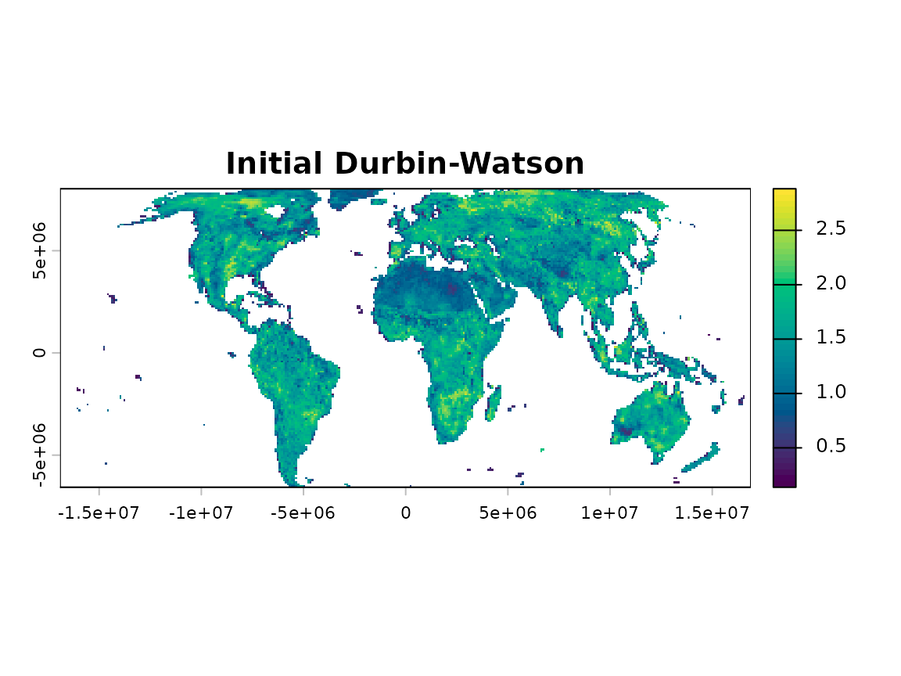
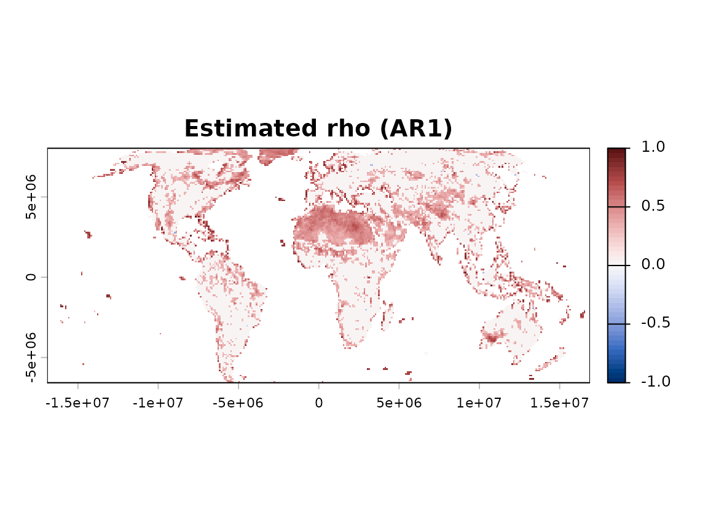
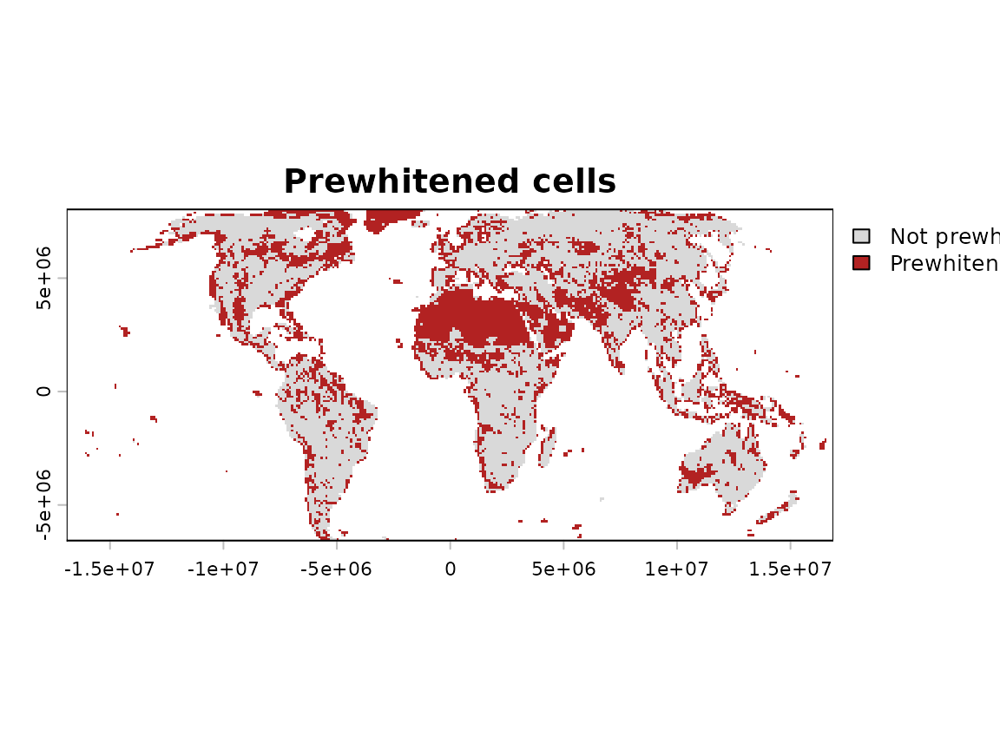

Why this matters
Serial correlation occurs when successive observations in a time series are not statistically independent. Positive autocorrelation can increase false trend detection (Type I errors; von Storch and Navarra, 1995), whereas negative autocorrelation can reduce the ability to detect genuine trends (Type II errors; O’Brien et al., 2021). Ignoring serial dependence can compromise statistical inference. However, unnecessary or inappropriate prewhitening may reduce statistical power or distort trend estimates. Serial correlation should therefore be diagnosed and treated only when justified by the data (Yue and Wang, 2002).
What prewhiten() does
prewhiten() receives a raster time series and returns a
transformed series together with cell-level diagnostics. Its default
method is selective: only cells whose diagnostic indicates relevant
serial autocorrelation are modified. All prewhitening procedures
implemented in sptrends are designed to preserve the underlying trend
signal. Classical prewhitening is deliberately excluded because
filtering the raw series directly may attenuate the trend being analysed
(Yue et al., 2002).
Basic workflow
pw <- prewhiten(r, report = FALSE, verbose = FALSE)
pw
#> <Wang & Swail (2001) prewhitening result>
#> Prewhitened: 5987 of 15675 valid cells (38.2%)
#> Use summary() for diagnostic detail, or inspect $diagnostics directly.
summary(pw)
#> Valid cells: 15675
#> Prewhitened: 5987 (38.2%)
#> Mean rho among prewhitened cells: 0.4493
#> Median Durbin-Watson (all valid cells): 1.5306The initial Durbin-Watson statistic (Durbin and Watson, 1950) provides the evidence used by the default selective procedure. Values near 2 indicate little first-order serial correlation. With the default diagnostic thresholds, values below 1.4 indicate relevant positive autocorrelation and values above 2.6 indicate relevant negative autocorrelation.
plot(pw)


The diagnostic maps show the initial Durbin-Watson statistic, the estimated lag-1 autocorrelation and the consequence of the selective decision. Only cells crossing the diagnostic criterion and completing the transformation successfully are marked as prewhitened.
Understanding the results
pw$series contains the transformed raster time series to
be used in subsequent analyses when prewhitening is considered
necessary. pw$diagnostics records the initial Durbin–Watson
statistic, the estimated lag-1 autocorrelation coefficient, whether each
cell was modified and any numerical-stability warning. Cells that are
not modified retain their original observations.
Choosing the main options
sptrends provides four trend-preserving prewhitening procedures. They differ mainly in how autocorrelation is estimated and in whether the transformation is applied selectively or to every valid cell.
| Method | Main idea | Typical use |
|---|---|---|
TFPW_WS (Wang
& Swail, 2001) |
Selective, Durbin-Watson-gated (1950) | Recommended starting point |
TFPW_Y (Yue
et al., 2002) |
Trend-free treatment of every valid cell | Uniform treatment |
TFPW_Z (Zhang et al.,
2000) |
Iterative treatment of every valid cell | Ungated alternative |
VCTFPW (Wang et
al., 2015) |
Selective, variance-corrected treatment | Published alternative |
Classical prewhitening is deliberately excluded because filtering the raw series can attenuate the trend that the analysis seeks to detect (Yue et al., 2002).
Common mistakes
- Do not assume that every time series requires prewhitening; examine the diagnostics first and apply treatment only when serial correlation and the analytical context justify it.
- Do not interpret the default Durbin-Watson thresholds as a formal
significance test; use
dw_method = "test"when formal critical-value-based inference is required. - Do not treat prewhitening procedures as interchangeable; inspect the original and transformed series, compare their diagnostic maps and, when several methods are scientifically plausible, evaluate them as a sensitivity analysis before selecting one.
- Do not combine prewhitening with modified Mann-Kendall
(
MMK) without a clear methodological justification; both approaches address temporal autocorrelation (see trend-test vignette). - Do not assume
TFPW_Ypreserves the input series length; it returns one fewer temporal observation, so verify the output dimensions before proceeding to later analytical stages.
Next steps
Continue to vignette("c-trend-test") and
pass either the transformed series or the original series, according to
the analytical decision.
Further details
See ?prewhiten for equations, statistical assumptions,
diagnostics, method comparisons, limitations, external validation and
references.
References
- Durbin, J. and Watson, G.S. (1950) Testing for Serial Correlation in Least Squares Regression, I. Biometrika, 37(3-4), 409-428. https://doi.org/10.1093/biomet/37.3-4.409
- O’Brien, N.L., Burn, D.H., Annable, W.K. and Thompson, P.J. (2021) Trend Detection in the Presence of Positive and Negative Serial Correlation. Water Resources Research, 57. https://doi.org/10.1029/2020WR028886
- von Storch, H. and Navarra, A. (Eds.) (1995) Analysis of Climate Variability. Springer, Berlin. https://doi.org/10.1007/978-3-662-03167-4
- Wang, W., Chen, Y., Becker, S. and Liu, B. (2015) Variance Correction Prewhitening Method for Trend Detection in Autocorrelated Data. Journal of Hydrologic Engineering, 20(12), 04015033. https://doi.org/10.1061/%28ASCE%29HE.1943-5584.0001234
- Wang, X.L. and Swail, V.R. (2001) Changes of Extreme Wave Heights in Northern Hemisphere Oceans and Related Atmospheric Circulation Regimes. Journal of Climate, 14(10), 2204-2221. https://doi.org/10.1175/1520-0442%282001%29014%3C2204:COEWHI%3E2.0.CO;2
- Yue, S., Pilon, P., Phinney, B. and Cavadias, G. (2002) The Influence of Autocorrelation on the Ability to Detect Trend in Hydrological Series. Hydrological Processes, 16(9), 1807-1829. https://doi.org/10.1002/hyp.1095
- Yue, S. and Wang, C.Y. (2002) Applicability of Prewhitening to Eliminate the Influence of Serial Correlation on the Mann-Kendall Test. Water Resources Research, 38(6), 4-1. https://doi.org/10.1029/2001WR000861
- Zhang, X., Vincent, L.A., Hogg, W.D. and Niitsoo, A. (2000) Temperature and Precipitation Trends in Canada During the 20th Century. Atmosphere-Ocean, 38(3), 395-429. https://doi.org/10.1080/07055900.2000.9649654